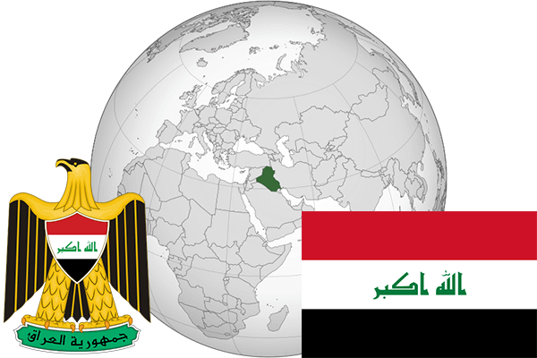

To`liq nomi: Iroq Respublikasi
Region: G`arbiy Osiyo
Qonunchilik shakli: Respublika
Mustaqillik kuni: 3-oktabr 1932 - yil (Birlashgan Qirollikdan)
Poytaxt: Bog`dod
Maydoni: 435 052 km² (dunyoda 58 -o`rinda )
Chegaradosh davlatlari: Iordaniya, Suriya, Turkiya, Eron, Quvayt, Saudiy Arabistoni
Aholisi: 37 056 169 (dunyoda 36 - o`rinda, 2015 -yil roʻyxat)
Aholi zichligi: 82,7 /km²
Aholining o`rtacha yoshi: 69,35 yil (70,7 ayollar, 68,0 erkaklar)
Rasmiy tili: Arab va kurt tili
Dini: Islom
Pul birligi: Iroq dinori
Telefon prefiksi: +964
Internet domen: .iq
Xalqaro tashkilotlarga a`zoligi: BMT (1945 – yildan), Arab davlatlari uyushmasi (1945-yildan) OPEC (Neftni eksport qiluvchi davlatlar tashkiloti) 1960-yildan
Dengiz va okeanlarga chiqishi: Persid
YIM: Butun: $ 240 006 mlrd, Jon boshiga $ 6490 (2015 - yil roʻyxati)
Yirik shaharlari: Bog`dod, Mosul, Basra, Sulaymoniya, Erbil, Kirkuk